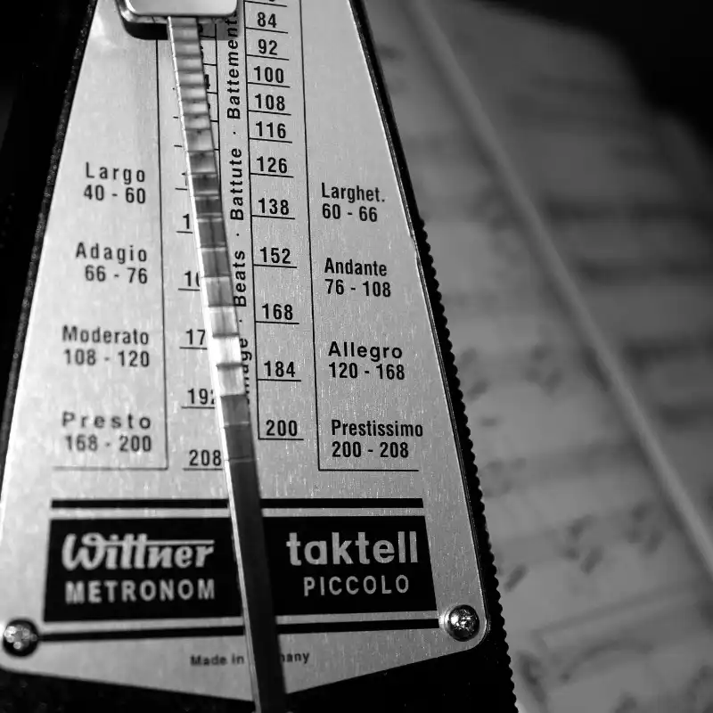

文章列表

構成音樂的三大元素是：音高，節奏，音色。其中節奏的調整是比較複雜的，因為他不像音高與音色有一個相對簡單的標準，變化上也有許多可能性，但如果仔細去聆聽，會發現節奏與美感的連結上，有一些潛在的規則。
** 固定節奏
討論固定節奏前，可以想想這個問題：
完全照節拍器進行的音樂，是否具有美感？
答案是肯定的，很多音樂都有持續性的節奏感，但這是否是音樂追求美感的最終答案？這似乎需要加入一些折衷空間，因為這樣的音樂有時似乎“顯的死板”。
這是由於在聆聽音樂時，聽眾會對接下來的音樂產生期待，而節奏完全固定的音樂缺乏了變化性，因此會降低聽覺的刺激。因此，我們得隨著情況需求加入變化節奏。
** 變化節奏
節奏變化看似複雜，但我覺得它其實只有兩個原則：
-節奏改變帶來注意力，也就是會直接將焦點拉過來。比方說，漸慢時(rit) 音樂呈現出步調放緩，改變情緒並加強這段音樂。漸快(accel)則可以提升音樂的活力跟前進感。使用它們都可以帶來注意力的聚焦。
-節奏改變可能帶來混亂或秩序。也就是當節奏改變時，如果他有規則性，就可以帶來效果，但如果節奏或速度不穩，就會帶來混亂。因此使用變化節奏時，律動需要某種程度的說服力，說服聽眾這是一個新的速度。
** 訓練節奏美感
個人覺得最有效的方法，除了與老師學習之外，就是使用錄音去紀錄音樂，觀察使用節奏的方式，累積經驗，最後找到一個使用節奏的邏輯。